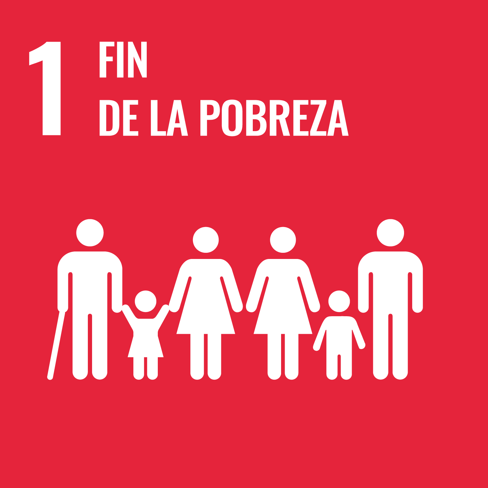
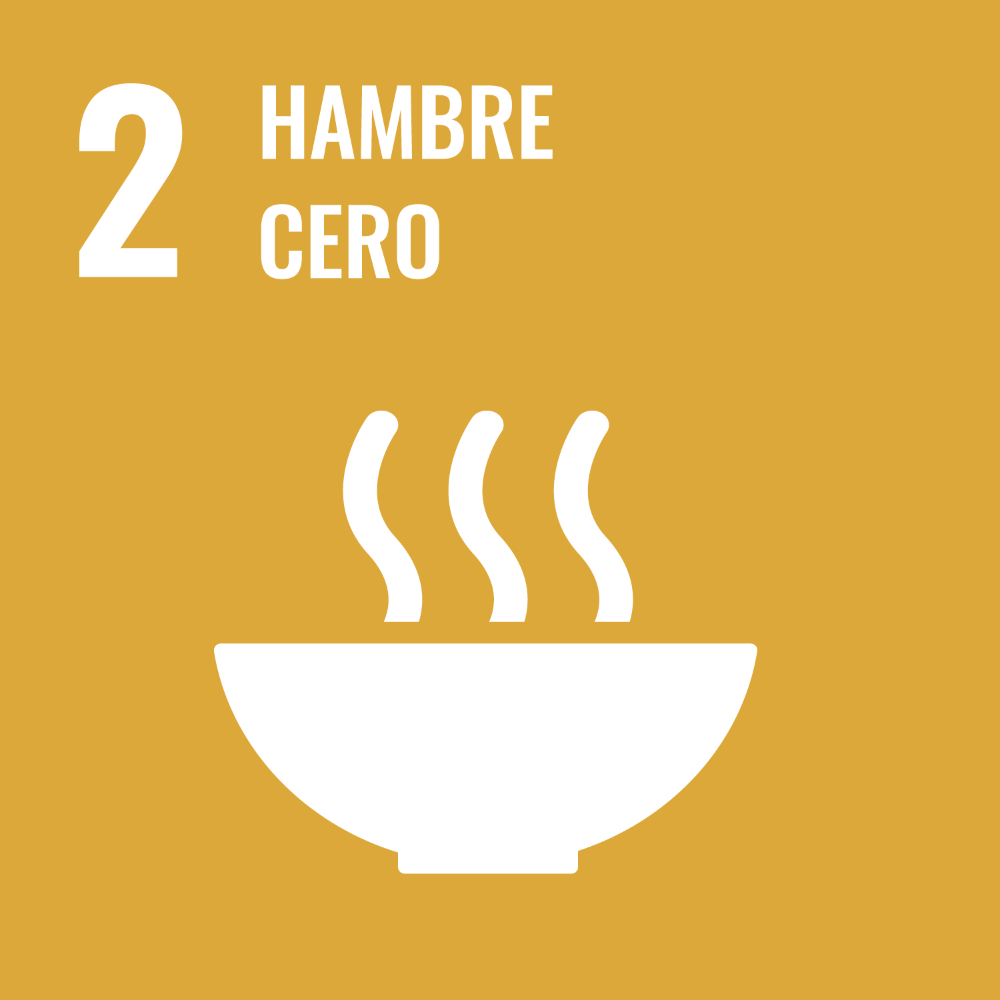
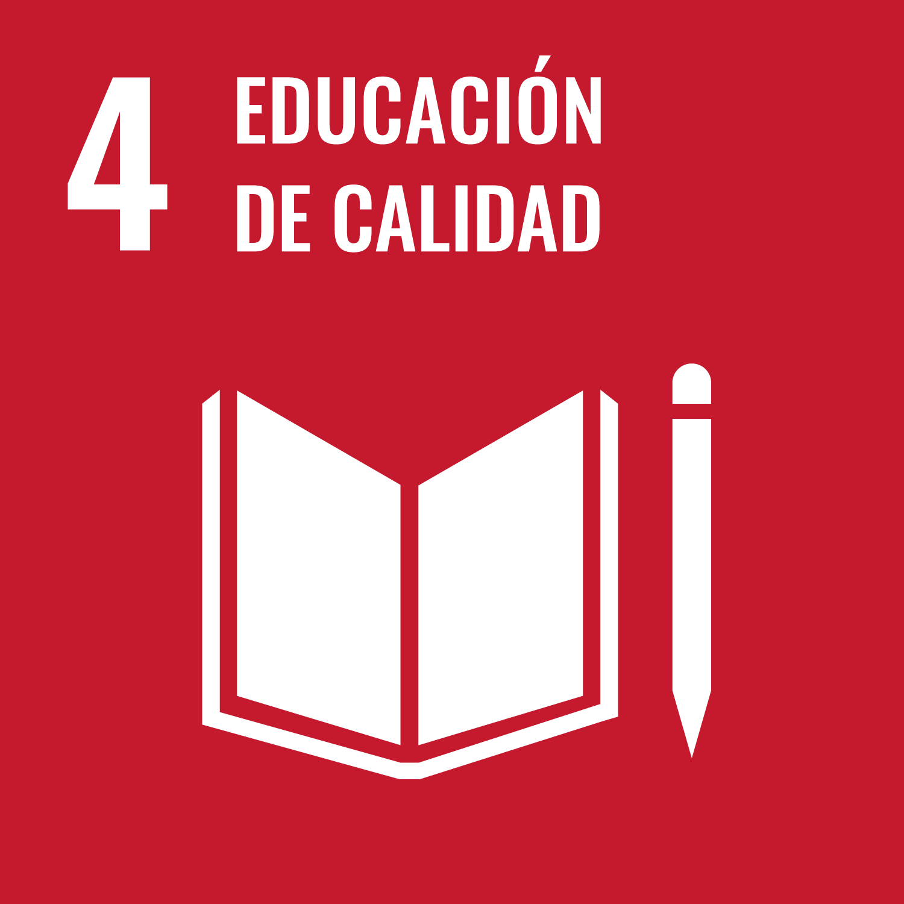
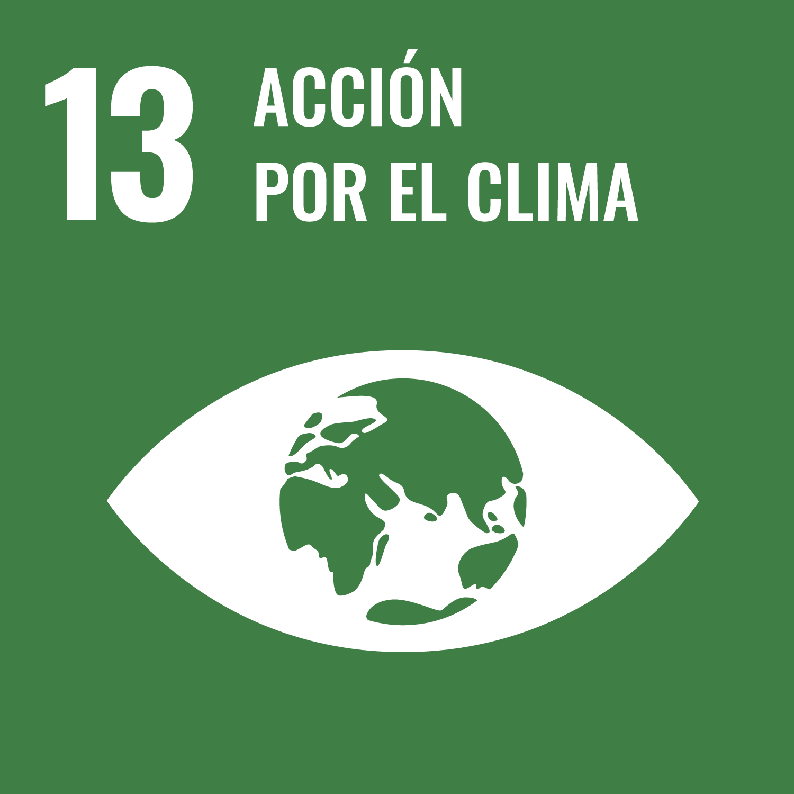
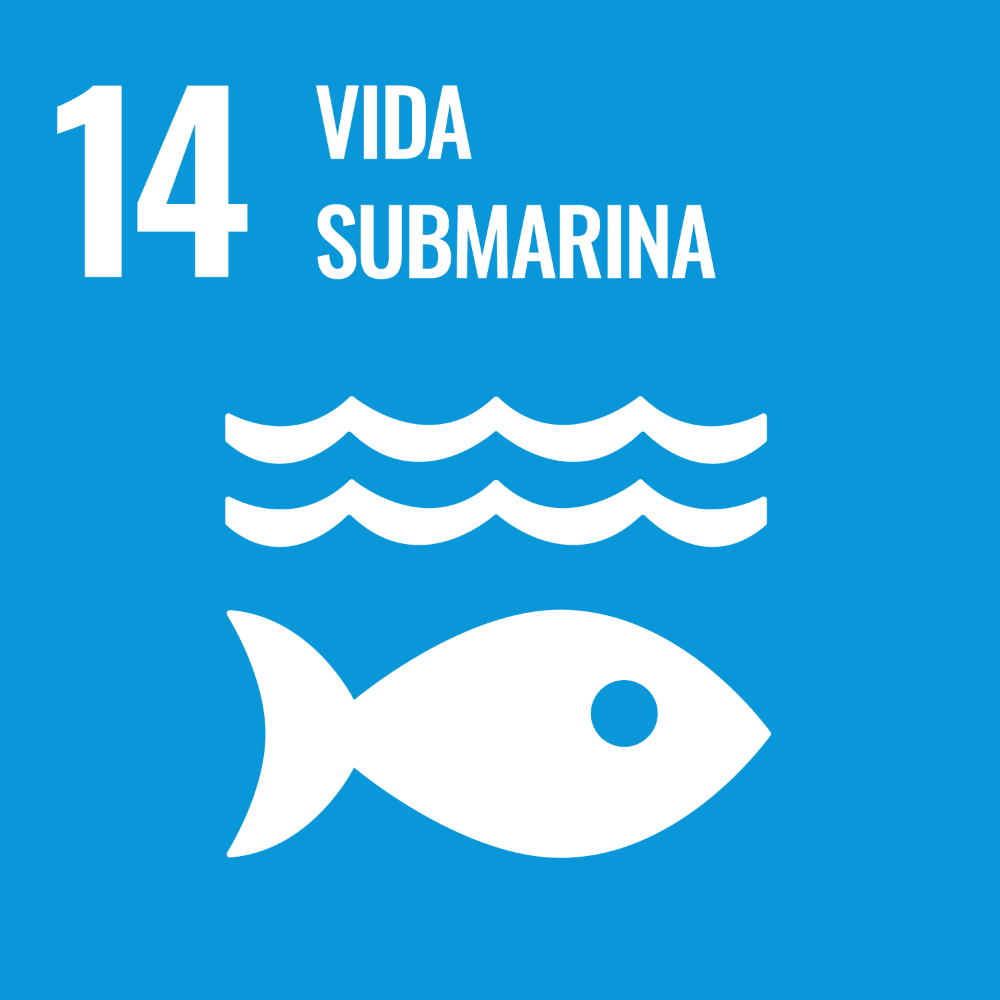
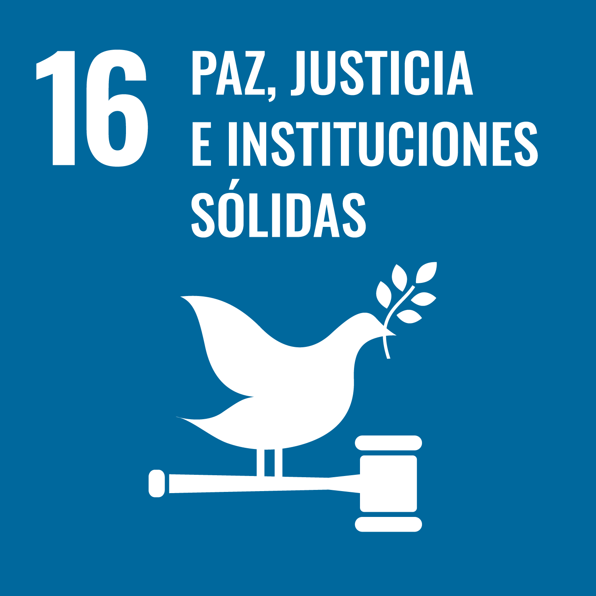

Detalles de los ODS
ODS 1 - Fin de la pobreza: Erradicar la pobreza extrema para todas las personas en todo el mundo para 2030 es un objetivo fundamental de la Agenda 2030 para el desarrollo sostenible.
ODS 2 - Hambre Cero: El objetivo 2 es crear un mundo libre de hambre para 2030. El problema global del hambre y la inseguridad alimentaria ha mostrado un aumento alarmante desde 2015, una tendencia exacerbada por una combinación de factores que incluyen la pandemia, los conflictos, el cambio climático y la profundización de las desigualdades.
ODS 3 - Salud y Bienestar: La cobertura sanitaria universal tiene como objetivo garantizar que todas las personas puedan acceder a servicios de salud de calidad sin afrontar dificultades financieras. Garantizar una vida saludable para todos requiere un fuerte compromiso, pero los beneficios superan los costes. Las personas sanas son la base de unas economías sanas.

ODS 4 - Educación de Calidad: La educación es un derecho humano fundamental y esencial para el desarrollo sostenible. El ODS 4 busca garantizar una educación inclusiva, equitativa y de calidad, promoviendo oportunidades de aprendizaje durante toda la vida para todos.
ODS 5 - Igualdad de Género: La igualdad de género es un derecho humano fundamental y una base esencial para un mundo pacífico, próspero y sostenible. El ODS 5 busca poner fin a todas las formas de discriminación y violencia contra mujeres y niñas, garantizando su plena participación en la vida política, económica y pública.

ODS 6 - Agua Limpia y Saneamiento: El agua es un recurso vital para la vida y el desarrollo sostenible. El ODS 6 busca garantizar la disponibilidad y gestión sostenible del agua y el saneamiento para todos, promoviendo el acceso equitativo a estos recursos esenciales.

ODS 7 - Energía Asequible y No Contaminante: El acceso a energía asequible, fiable, sostenible y moderna es esencial para el desarrollo económico y social. El ODS 7 busca garantizar el acceso universal a la energía, aumentar la proporción de energías renovables y mejorar la eficiencia energética.

ODS 8 - Trabajo Decente y Crecimiento Económico: El ODS 8 busca promover el crecimiento económico sostenido, inclusivo y sostenible, el empleo pleno y productivo y el trabajo decente para todos. Se enfoca en fomentar políticas que apoyen la creación de empleo, la innovación y el desarrollo empresarial.

ODS 9 - Industria, Innovación e Infraestructura: El ODS 9 busca construir infraestructuras resilientes, promover la industrialización inclusiva y sostenible y fomentar la innovación. Se enfoca en el desarrollo de infraestructuras sostenibles que impulsen el crecimiento económico y mejoren la calidad de vida.

ODS 10 - Reducción de las Desigualdades: El ODS 10 busca reducir la desigualdad en y entre los países, promoviendo políticas que aseguren la inclusión social, económica y política de todas las personas, independientemente de su origen, género o condición.

ODS 11 - Ciudades y Comunidades Sostenibles: El ODS 11 busca hacer que las ciudades y los asentamientos humanos sean inclusivos, seguros, resilientes y sostenibles. Se enfoca en mejorar la planificación urbana, el transporte público y la gestión de residuos para crear entornos urbanos más habitables.

ODS 12 - Producción y Consumo Responsables: El ODS 12 busca garantizar modalidades de consumo y producción sostenibles, promoviendo la eficiencia de los recursos, la reducción de residuos y el fomento de prácticas sostenibles en todos los sectores.

ODS 13 - Acción por el Clima: El ODS 13 busca mejorar la educación, la concienciación y la capacidad humana e institucional sobre la mitigación del cambio climático, la adaptación, la reducción de sus efectos y la alerta temprana.
ODS 14 - Vida Submarina: El ODS 14 busca conservar y utilizar sosteniblemente los océanos, los mares y los recursos marinos para el desarrollo sostenible. Se enfoca en la protección de los ecosistemas marinos y la reducción de la contaminación marina.
ODS 15 - Vida de Ecosistemas Terrestres: El ODS 15 busca proteger, restaurar y promover el uso sostenible de los ecosistemas terrestres, gestionar de manera sostenible los bosques, combatir la desertificación y detener la pérdida de biodiversidad.

ODS 16 - Paz, Justicia e Instituciones Sólidas: El ODS 16 busca promover sociedades pacíficas e inclusivas para el desarrollo sostenible, proporcionar acceso a la justicia para todos y construir instituciones eficaces, responsables e inclusivas a todos los niveles.
ODS 17 - Alianzas para Lograr los Objetivos: El ODS 17 busca fortalecer los medios de implementación y revitalizar la Alianza Mundial para el Desarrollo Sostenible, promoviendo asociaciones entre gobiernos, sector privado y sociedad civil para alcanzar los ODS.